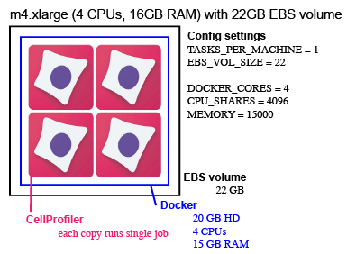

Step 1: Configuration#
The first step in setting up any job is editing the values in the config.py file.
Once the config file is created, simply type python run.py setup to set up your resources based on the configurations you’ve specified.
Components of the config file#
APP_NAME: This will be used to tie your clusters, tasks, services, logs, and alarms together. It need not be unique, but it should be descriptive enough that you can tell jobs apart if you’re running multiple analyses (i.e. “NuclearSegmentation_Drosophila” is better than “CellProfiler”).
DOCKERHUB_TAG: This is the encapsulated version of your software your analyses will be running.
AWS GENERAL SETTINGS#
These are settings that will allow your instances to be configured correctly and access the resources they need- see Step 0: Prep for more information.
Bucket configurations allow you to read/write from/to different bucket in different accounts from where you are running DCP. If you are not accessing any external buckets, set AWS_BUCKET, SOURCE_BUCKET, and DESTINATION_BUCKET the same. For more information and examples, see External Buckets.
AWS_BUCKET: The bucket to which you would like to write log files. This is generally the bucket in the account in which you are running compute.
SOURCE_BUCKET: The bucket where the image files you will be reading are. Often, this is the same as AWS_BUCKET.
WORKSPACE: The bucket where non-image files you will be reading are (e.g. pipeline, load_data.csv, etc.). Often, this is the same as AWS_BUCKET.
DESTINATION_BUCKET: The bucket where you want to write your output files. Often, this is the same as AWS_BUCKET.
UPLOAD_FLAGS: If you need to add flags to an AWS CLI command to upload flags to your DESTINATION_BUCKET, this is where you enter them. This is typically only used if you are writing to a bucket that is not yours. If you don’t need to add UPLOAD_FLAGS, keep it as the default ‘’.
EC2 AND ECS INFORMATION#
ECS_CLUSTER: Which ECS cluster you’d like the jobs to go into. All AWS accounts come with a “default” cluster, but you may add more clusters if you like. Distinct clusters for each job are not necessary, but if you’re running multiple analyses at once it can help avoid the wrong Docker containers (such as the ones for your “NuclearSegmentation_Drosophila” job) going to the wrong instances (such as the instances that are part of your “NuclearSegmentation_HeLa” spot fleet).
CLUSTER_MACHINES: How many EC2 instances you want to have in your cluster.
TASKS_PER_MACHINE: How many Docker containers to place on each machine.
MACHINE_TYPE: A list of what type(s) of machines your spot fleet should contain.
MACHINE_PRICE: How much you’re willing to pay per hour for each machine launched. AWS has a handy price history tracker you can use to make a reasonable estimate of how much to bid. If your jobs complete quickly and/or you don’t need the data immediately you can reduce your bid accordingly; jobs that may take many hours to finish or that you need results from immediately may justify a higher bid. See also AWS on-demand pricing to compare the cost savings of using spot fleets.
EBS_VOL_SIZE: The size of the temporary hard drive associated with each EC2 instance in GB. The minimum allowed is 22. If you have multiple Dockers running per machine, each Docker will have access to (EBS_VOL_SIZE/TASKS_PER_MACHINE)- 2 GB of space.
DOWNLOAD_FILES: Whether or not to download the image files to the EBS volume before processing, as opposed to accessing them all from S3FS. This typically requires a larger EBS volume (depending on the size of your image sets, and how many sets are processed per group), but avoids occasional issues with S3FS that can crop up on longer runs. By default, DCP uses S3FS to mount the S3
SOURCE_BUCKETas a pseudo-file system on each EC2 instance in your spot fleet to avoid file download. If you are unable to mount theSOURCE_BUCKET(perhaps because of a permissions issue) you should proceed withDOWNLOAD_FILES = 'True'.ASSIGN_IP: Whether or not to assign an a public IPv4 address to each instance in the spot fleet. If set to ‘False’ will overwrite whatever is in the Fleet file. If set to ‘True’ will respect whatever is in the Fleet file. Distributed-CellProfiler originally defaulted to assign an IP address to each instance so that one could connect to the instance for troubleshooting but that need has been mostly obviated by the level of logging currently in DCP.
DOCKER INSTANCE RUNNING ENVIRONMENT#
DOCKER_CORES: How many copies of your script to run in each Docker container.
CPU_SHARES: How many CPUs each Docker container may have.
MEMORY: How much memory each Docker container may have.
SECONDS_TO_START: The time each Docker core will wait before it starts another copy of your software. This can safely be set to 0 for workflows that don’t require much memory or execute quickly; for slower and/or more memory intensive pipelines we advise you to space them out by roughly the length of your most memory intensive step to make sure your software doesn’t crash due to lack of memory.
SQS QUEUE INFORMATION#
SQS_QUEUE_NAME: The name of the queue where all of your jobs will be sent.
SQS_MESSAGE_VISIBILITY: How long each job is hidden from view before being allowed to be tried again. We recommend setting this to slightly longer than the average amount of time it takes an individual job to process- if you set it too short, you may waste resources doing the same job multiple times; if you set it too long, your instances may have to wait around a long while to access a job that was sent to an instance that stalled or has since been terminated.
SQS_DEAD_LETTER_QUEUE: The name of the queue to send jobs to if they fail to process correctly multiple times; this keeps a single bad job (such as one where a single file has been corrupted) from keeping your cluster active indefinitely. This queue will be automatically made if it doesn’t exist already. See Step 0: Prep for more information.
JOB_RETRIES: This is the number of times that a job will be retried before it is sent to the Dead Letter Queue.
LOG GROUP INFORMATION#
LOG_GROUP_NAME: The name to give the log group that will monitor the progress of your jobs and allow you to check performance or look for problems after the fact.
MONITORING#
AUTO_MONITOR: Whether or not to have Auto-Monitor automatically monitor your jobs.
CLOUDWATCH DASHBOARD CREATION#
CREATE_DASHBOARD: Create a Cloudwatch Dashboard that plots run metrics?
CLEAN_DASHBOARD: Automatically clean up the Cloudwatch Dashboard at the end of the run?
REDUNDANCY CHECKS#
CHECK_IF_DONE_BOOL: Whether or not to check the output folder before proceeding. Case-insensitive. If an analysis fails partway through (due to some of the files being in the wrong place, an AWS outage, a machine crash, etc.), setting this to ‘True’ this allows you to resubmit the whole analysis but only reprocess jobs that haven’t already been done. This saves you from having to try to parse exactly which jobs succeeded vs failed or from having to pay to rerun the entire analysis. If your software determines the correct number of files are already in the output folder it will designate that job as completed and move onto the next one. If you actually do want to overwrite files that were previously generated (such as when you have improved a pipeline and no longer want the output of the old version), set this to ‘False’ to process jobs whether or not there are already files in the output folder.
EXPECTED_NUMBER_FILES: How many files need to be in the output folder in order to mark a job as completed.
MIN_FILE_SIZE_BYTES: What is the minimal number of bytes an object should be to “count”? Useful when trying to detect jobs that may have exported smaller corrupted files vs larger, full-size files.
NECESSARY_STRING: This allows you to optionally set a string that must be included in your file to count towards the total in EXPECTED_NUMBER_FILES.
CELLPROFILER SETTINGS#
ALWAYS CONTINUE: Whether or not to run CellProfiler with the –always-continue flag, which will keep CellProfiler from crashing if it errors. Use with caution. This can be particularly helpful in jobs where a large number of files are loaded in a single run (such as during illumination correction) so that a corrupted or missing file doesn’t prevent the whole job completing. However, this can make it harder to notice jobs that are not completely succesffully so should be used with caution. We suggest using this setting in conjunction with a small number of JOB_RETRIES.
PLUGINS#
USE_PLUGINS: Whether or not you will be using external plugins from the CellProfiler-plugins repository. When True, passes the
--plugins-directoryflag to CellProfiler. Defaults to the current v1.0CellProfiler-plugins/active_pluginslocation for plugins but will revert to the historical location of plugins in theCellProfiler-pluginsroot directory if theactive_pluginsfolder is not present.UPDATE_PLUGINS: Whether or not to update the plugins repository before use. (i.e. run
git fetch --allon CellProfiler-plugins)PLUGINS_COMMIT: If desired, what commit or version tag to check out. Used in the
git checkout PLUGINS_COMMITcommand in CellProfiler-plugins. If you do not want to checkout a specific commit, set to False.INSTALL_REQUIREMENTS: Whether or not to install requirements associate with plugins. Not all plugins require additional requirement installation. See CellProfiler-plugins Documentation for more information on requirements.
REQUIREMENTS: For current v1.0 CellProfiler-plugins, a flag that will be passed to the install command (e.g.
cellpose). See CellProfiler-plugins Documentation for more information on supported flags. For deprecated versions of CellProfiler-plugins before v1.0, pass a path within the CellProfiler-plugins repository to the requirements file you would like to install that will be used in thepip install -r REQUIREMENTS_FILEcommand.
The CellProfiler/Distributed-CellProfiler Docker 2.0.0_4.2.4 and older have a clone of the CellProfiler-plugins repository with deprecated organization in them.
If you would like to continue using this clone, set USE_PLUGINS = 'True' and UPDATE_PLUGINS = 'False'.
Note that if you do need to install requirements with the deprecated organization, pass the path to the requirements file within the CellProfiler-plugins repository as REQUIREMENTS.
If you would like to update the CellProfiler-plugins repository with up-to-date plugins and new structure while using the CellProfiler/Distributed-CellProfiler Docker 2.0.0_4.2.4 and older, set UPDATE_PLUGINS = 'True'.
CellProfiler/Distributed-CellProfiler Dockers newer than 2.0.0_4.2.4 have current CellProfiler-plugins repository organization.
If you need to use deprecated plugin organization you can access previous commits or version tags by passing them as PLUGINS_COMMIT.
EXAMPLE CONFIGURATIONS#

This is an example of one possible configuration. It’s a fairly large machine that is able to process 64 jobs at the same time.
The Config settings for this example are:
TASKS_PER_MACHINE = 16 (number of Dockers)
EBS_VOL_SIZE = 165
MACHINE_TYPE = [‘m4.16xlarge’]
DOCKER_CORES = 4 (copies of CellProfiler to run inside a docker)
CPU_SHARES = 4096 (number of cores for each Docker * 1024)
MEMORY = 15000 (MB for each Docker)

This is an example of another possible configuration. When we run Distributed CellProfiler we tend to prefer running a larger number of smaller machine. This is an example of a configuration we often use. We might use a spot fleet of 100 of these machines (CLUSTER_MACHINES = 100).
The Config settings for this example are:
TASKS_PER_MACHINE = 1 (number of Dockers)
EBS_VOL_SIZE = 22
MACHINE_TYPE = [‘m4.xlarge’]
DOCKER_CORES = 4 (copies of CellProfiler to run inside a docker)
CPU_SHARES = 4096 (number of cores for each Docker * 1024)
MEMORY = 15000 (MB for each Docker)